In this project, we are exploring the generation of co-occurrence graphs for coronavirus-related news articles. Basically, co-occurrence graphs demonstrate the frequency of the occurrence of two terms in the same news article across the entire news corpus. Each vertex in the graph is a word selected to generate the graph for. The size of the vertex in the graph represents how many times the corresponding word appears. The strength of the edge connecting two vertices represents how many times the two connecting words occur in the same news article. With an efficient implementation to generate such co-occurrence graphs and apply it to the rapidly increasing news articles and media coverage on coronavirus, we are able to detect the interconnections among different entities and specific topics in these news articles. This can be useful for researchers to analyze the news relating to coronavirus, which can be used to analyze trends and track the spread of the virus over time.
The major data set we are working on is coming from “The GDELT” Project . The website aggregates coronavirus related news articles from the global media and updates them on a daily basis. There are already around 42 millions coronavirus news collected during the time of our analysis. We took a subset of around 1 million news articles for our program and stored the input data on a AWS S3 bucket.
Presentation:
Website Credits: Theme originally created by Silke V. via Codepen.
There are four major steps to generate a co-occurrence matrix that can be directly used to create the co-occurrence graph. After news articles are read into the system, the first step is to do NLP text data preprocessing such as tokenization and removing the stopwords. The second step is to create a dictionary that contains all the words for which we want to generate the co-occurrence graph. In this project, we choose to use the most frequent words among the entire news corpus for the co-occurrence graph after excluding stopwords or words that do not have any real meaning if interpreted individually. The third step is to create a count matrix based on the word dictionary where we record for each news article, how many times each word in the dictionary occurs. The last step is to do a multiple manipulation of the count matrix with itself to generate the final co-occurrence matrix.
Above is our pipeline implementation for the co-occurrence matrix generation process. Each row represents a data pipeline we explored. During each of the four steps, we tried different parallelization techniques we learned from the class. We would like to compare and explore which parallelization technique would be the most suitable and efficient for different stages of the process to generate co-occurrence matrices. The implementation was fairly straightforward since each part could be developed independently of the other pieces, then combined in the end.
The four major stages in our pipeline were as follows: upon reducing our dataset, we first had to pre-process our text; this included removing stop words such as "and" or "the" and lowercasing. We then could extract the unique words from the text, otherwise known as a dictionary. However, for most purposes, we decided to use a fixed-length dictionary of the top 20 or 100 words across all news articles to save computations. The next step was to create an occurrence matrix, showing which words appear in which article, which was multiplied with itself to achieve a co-occurrence matrix for each article. We created numerous pipelines to process each of these four steps in parallel, which was a permutation of four technologies we learned in the CS205 module: Spark, MapReduce, OpenMP, and MPI, as well as a sequential implementation/use of a fixed value to generate the dictionary, as explained above. The pipelines we used were as follows:
MapReduce and NLP Text Preprocessing
We first explore using MapReduce to do NLP text preprocessing on the news articles. The NLP preprocessing tasks include removing duplicated news articles and news articles that only contain a URL, removing punctuations, converting sentences to lowercase, tokenization and removing stopwords. The mapReduce workflow is straightforward in the NLP text preprocessing stage. All the data preprocessing code is implemented in the mapper and the mapper will do most of the data preprocessing. The reducer mainly serves the role to remove duplicated news articles in the data set and emit a corpus of cleaned news articles.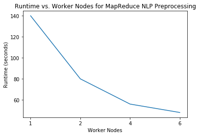 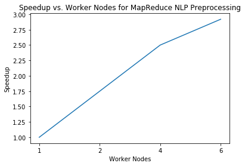
We can see that as we increase the number of worker nodes, the running time gradually decreases. With a 4-worker node(m4.xlarge) architecture in AWS, MapReduce is able to preprocess all the 1 millions news articles within one minute.
At the same time, however, it is worth mentioning that there are two things that are not so desirable for using MapReduce to do NLP data preprocessing. First of all, many MapReduce service providers do not support running MapReduce jobs with pre-built NLP packages such as NLTK. As a result, developers will have to manually implement NLP processing code in the mapper or reducer instead of directly calling a package. Such manual implementation is simple for basic tasks such as removing stopwords, but not so easy to do with more advanced NLP techniques such as lemmatization.
MapReduce and Creating Top Word Dictionary
The second thing we explored with MapReduce is to create the word dictionary that contains the most frequent words in the entire news corpus. Through our performance testing, we realized that using MapReduce is not efficient for this task. There are two major overheads for using MapReduce in this stage.The first overhead is that this task will require two passes of MapReduce. The first pass is to perform a word count for each word in the cleaned news corpus. The second pass is then to calculate the most frequent words based on the output from the first pass. This would be very time-consuming because the first pass will first output the data to a S3 budget, and then the second pass will need to read the data from the S3 bucket, and upload the data to its own HDFS before the second pass can start. The I/O cost here is very high.
Another major overhead is that only one reducer can be used during the second pass to generate the most frequent words among the entire news corpus. If we use more than one reducer in the second pass, each reducer will be generating its own most frequent words based on the inputs sent from their corresponding mappers.
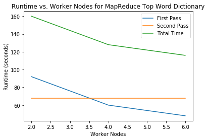
As a result, we believe that MapReduce does not seem to be a good choice in creating the top word dictionary. We will explore other alternatives in the following parts.
Spark Data Workflow
After MapReduce, we also explored using pySpark to implement our data workflow. We found that Spark is much more straightforward than MapReduce. We are able to do NLP-data preprocess, create the top words dictionary, and create the word count matrix all in the same spark program step by step.Spark also has the well-developed Spark Machine Learning Library(MLlib) where many NLP techniques are already implemented. We are able to directly call these methods in our program instead of implementing them manually as in MapReduce.
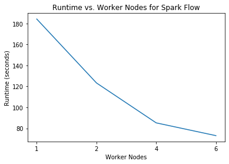 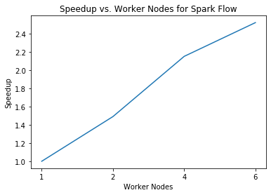
With a 6-node(m4.xlarge) Spark architecture on AWS, we are able to complete preprocessing all the 1 million news articles, searching for the most frequent words for top words dictionary, and creating the word count matrix based on the dictionary in as few as around 73 seconds. This is a significant improvement over the MapReduce workflow.
The last step in creating the co-occurrence matrix is the matrix multiplication of the word count matrix with itself. Through our research, however, Spark is not a stand tool for scalable matrix multiplication. Using Spark for matrix multiplication is still an ongoing research in the academic field. As a result, we decided to use OpenMP and MPI for matrix multiplication during the last stage of our data pipeline.
C++ Top Word Dictionary
In addition to MapReduce, we used C++ to generate the dictionary. Doing this was fairly simple, and done in two steps similar to the MapReduce version. We use a hashmap to record the frequency of each word in the dataset, then sort the words by their frequency with the highest frequency words first. We then added the top n desired words to the dictionary, which was either 20 or 100 in our later tests.We used two data structures to store the dictionary: an array, or a vector data type in C++, and a hashmap. We see the performance of the two compared here.
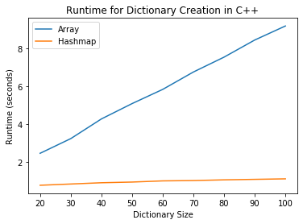
We see, somewhat unsurprisingly, that the hashmap is much faster than the array-based dictionary. We also see that the amount that the runtime increases as the dictionary size increases is almost negligible for the hashmap.
The C++ dictionary creation was done sequentially. We created the dictionary independently on each MPI process. The corpus file was static across all processes and the dictionary creation was deterministic, so the dictionary was guaranteed to be the same on each MPI process. It was unclear how we could use MPI to calculate the dictionary in parallel; computing the frequency of each word would be easy to do in parallel, but we were not sure how to aggregate the results on the master node as it would involve sending variable strings and the counts from each node to the master. This was not too much of a problem because even the array-based dictionary took less than ten seconds to create for a dictionary size of 100.
MPI Occurrence Matrix
Next, we create the occurrence matrix. To create this matrix, for every word we must look up its location in the dictionary so that we know which element to increment in the matrix. The data structure used matters a lot here, since a lookup in an array is O(n), but in a hashmap the lookup is O(1).We parallelized the occurrence matrix creation using MPI. We assign each process a certain set of lines to process and then send the results back to the master node. This worked nicely since we have already computed the dictionary, and each line of the file, i.e. each article, was independent of all of the other articles, so each process could compute the rows of the matrix independently of the others then just aggregate the matrix in the end.
Below, we see the performance of the occurrence matrix for a dictionary size of 20 and 100.
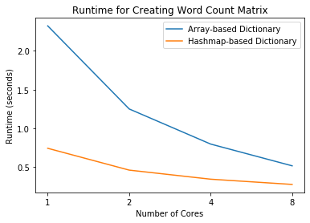
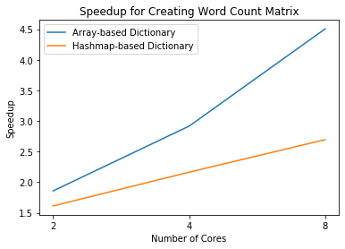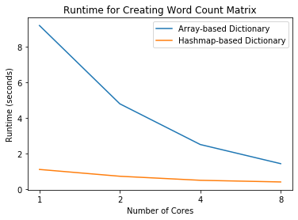
We see that the trends in these two plots are identical. The hashmap is significantly faster than the array-based dictionary since the lookups are almost instant. We do see that the speedup is lower for the hashmap than the array, but this is likely because the hashmap version runs so much faster, so the speedup is overshadowed by the MPI overhead. We are already running in less than two seconds, so the speedup is not as relevant.
MPI Co-Occurrence Matrix
Next, we create the co-occurrence matrix. If we let the word occurrence matrix be X, then the co-occurrence matrix is computed as XTX. We were actually able to do this with some clever indexing that allowed us to avoid explicitly calculating XT so that we didn’t have to waste extra memory.After computing the word occurrence matrix, we aggregate it on the master node then broadcast it back to each node, since the entire matrix is required for computing even just a small part of the co-occurrence matrix. We then let each process compute a certain number of designated rows of the co-occurrence matrix.
Below, we see the performance of calculating the co-occurrence matrix with MPI for a dictionary size of 20 on the left and 100 on the right.
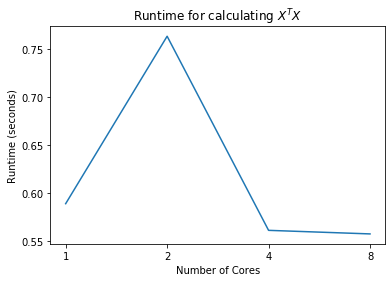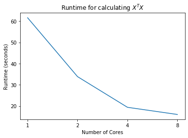
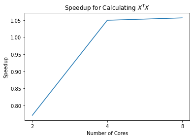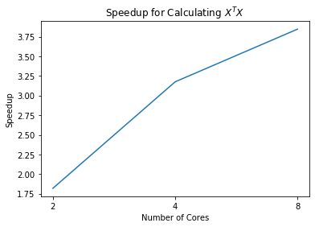
We see some strange trends for the smaller dictionary size; however, all of the runtimes are less than one second, and this is likely due to the MPI overhead causing some strange behavior. For example, as we go from one to two processes, we actually see an increase in the runtime. For the larger dictionary size, we see the trends we would expect. As we increase the number of cores, the runtime decreases by a proportional amount. The speedup is not linear; with 8 processes, the speedup is only around 3.75. There are likely many optimizations that could be made to increase this performance, and the overhead limits the amount of speedup we can achieve, but these trends seem reasonable.
MPI Pipeline
We now look at the full C++ MPI pipeline. This involves the dictionary generation which is done sequentially on each process, and the calculation of the word occurrence matrix and co-occurrence matrix done in parallel. Below we compare the results for the entire pipeline, again for a smaller and larger dictionary size.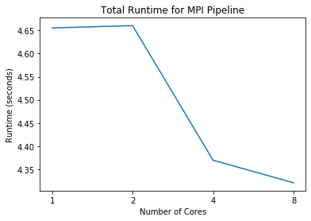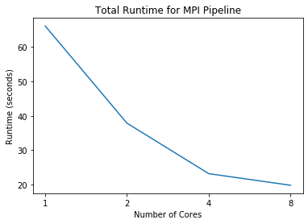
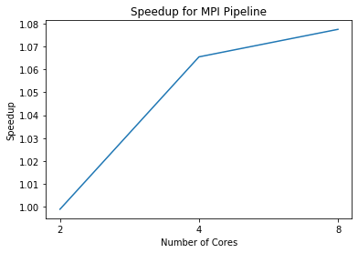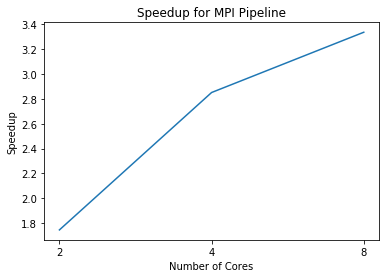
The results for the entire pipeline are pretty similar to the results for the co-occurrence matrix calculation. There is some strange behavior with the smaller dictionary, likely caused by the MPI overhead with such a small calculation. The entire pipeline runs in less than 5 seconds. We see the trends we would expect with the larger dictionary. With these results, we can also do some code profiling. We see that the runtime is very close to the runtime of calculating the co-occurrence matrix. This means that the bulk of computation is spent calculating the co-occurrence matrix. The dictionary and word occurrence matrices do take a non-negligible amount of time, but this is only a fraction of the time when we have to calculate XTX for a large dictionary size.
Discussion
We can clearly see the application of calculating this co-occurrence matrix, and why using “big compute” resources is necessary. The co-occurrence matrix can show us how different words are correlated with each other. For example, we may want to see how the words “coronavirus” and “fear”, or “COVID-19” and “social distancing” correlate with each other. We may also like to see how these trends change over time. This could be used as a tool to track the trends of the virus. If we look at the matrix over time and see that the relationship between “coronavirus” and “hope” is increasing, then we may see that the spread of the virus is decreasing.The high level process is rather simple. We find the most frequent words in the dataset and choose how many we want to track, then create the word occurrence matrix by counting the number of times one of the top words appears in the article, then simply calculate XTX which is the co-occurrence matrix. The full dataset of news articles, after the NLP we did, could be contained in a file that was only about 40MB. The file was about 350,000 lines long and no article contained more than 300 unique words. However, even with this simple problem and relatively small dataset, we clearly see the need for “big compute” resources. We saw that with a small dictionary size we could complete the process in just a few seconds, but when we increase the dictionary to just 100, the runtime jumps to over a minute on one core. One minute is not too significant of a runtime, but when we go to a dictionary size of 200, the runtime is almost 5 minutes. The runtime of calculating the co-occurrence matrix is O(n3), or more specifically, O(c2r) where c is the dictionary size and r is the number of articles. For a dictionary size of 100, this is about 3.5 billion operations, for 200 it jumps to about 14 billion operations, and for a dictionary size like 1000, this would be about 350 trillion operations, which is completely infeasible for a regular individual on their computer. If we assume 3.5 billion operations takes about a minute, then 350 trillion operations would take about 20 days on one core. I can’t imagine there are many people that want to run anything on their own computer for more than a few minutes or hours, but if this can be passed off to a cluster or a supercomputer that can finish this computation in a few hours, then this would be helpful for researchers to be able to get results more quickly and avoid waiting days for results.
We did see some drawbacks or problems with some elements of our pipeline. We saw that MapReduce still has huge overheads even at this scale. MapReduce could be useful if we were processing gigabytes of data, but on this relatively small dataset the overhead overpowered the usefulness of MapReduce.
We had several issues with OpenMP and MPI. When we increased the number of threads for OpenMP for calculating the word occurrence matrix, we actually saw the runtime increase, which defeats the purpose of OpenMP. This could have been caused by any number of problems, like overhead that we could not find, race conditions, computations being done redundantly, an issue with memory, or something else entirely. We were unable to find a cause for this increase. In addition, in the MPI implementation, we saw a massive drop in performance as we went from one to two AWS instances. This was due to the overhead created by large amounts of data being sent over the network rather than within one instance. The computations can be done independently, but aggregating the data on the master node causes too much overhead when the data has to be sent over the network.
We saw that the speedup was more obvious when we used a larger dictionary size, since there was more runtime and more computations being done so that the overhead of the framework was minimal compared to the computations themselves. We also saw that there was a significant difference between the data structure choice for the dictionary. Trading off memory for faster lookups in a hashmap was worth it compared to using a simple array. However, this was somewhat negligible when compared to the time spent calculating the co-occurrence matrix. For the 100-size dictionary, the co-occurrence took over 90% of the runtime. For larger dictionaries, we can find the dictionary and word occurrence matrices fairly easily, but the co-occurrence graph can be infeasible to compute without more resources.
The pipeline we would recommend is the Spark+MPI pipeline. We saw good performance out of both of these implementations and if we can work out the multi-node issues with MPI, it would allow for this pipeline to be extended to several nodes, allowing for larger dictionary sizes or a larger initial dataset of articles.
Future Work
This study yields lots of future work. The clear first step is to fix our issues with OpenMP and MPI. We could use a debugging tool like gdb to try to analyze what is happening with OpenMP, or just remove all parallelism and add it back piece by piece. There aren’t specific issues with MPI, but we need to find some way to optimize the transfer of data from worker nodes to the master node, by transferring less data somehow or optimizing the data that is transferred.We would also like to try other frameworks to implement this process. We would like to try a hybrid MPI+OpenMP pipeline (after we are able to resolve the above issues), as well as an OpenACC implementation, and maybe even a hybrid MPI+OpenACC to spread GPU computations to multiple nodes. GPUs can do matrix operations very quickly, so this may yield massive speedup.
There are other matrix multiplication algorithms that we could attempt to use. The Strassen algorithm runs in approximately O(n2.8), which is noticeably faster than the naive O(n3) algorithm that we used. It isn’t immediately clear how we would implement the Strassen algorithm in parallel, but if this could be done then it would almost definitely speed up the large matrix multiplication we have to perform.
The co-occurrence matrix can be visualized as a co-occurrence graph. We would like to do this, as a visualization is easier to interpret than just numbers in a matrix in almost any case. This has many applications and is very relevant to the current research tracking and predicting the spread of coronavirus.
Finally, we would also like to try larger dictionary sizes, a larger subset from the coronavirus news dataset, or a different news article dataset altogether. These would all require more computational power than we used, but it would be interesting to analyze the pipeline when we can run it on a very large dataset across many nodes.